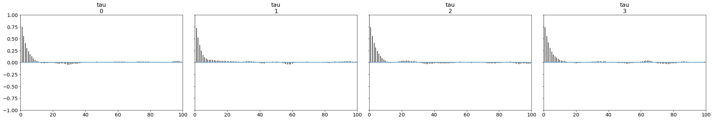
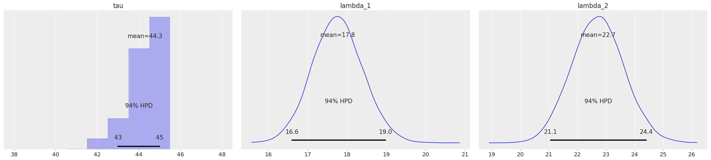
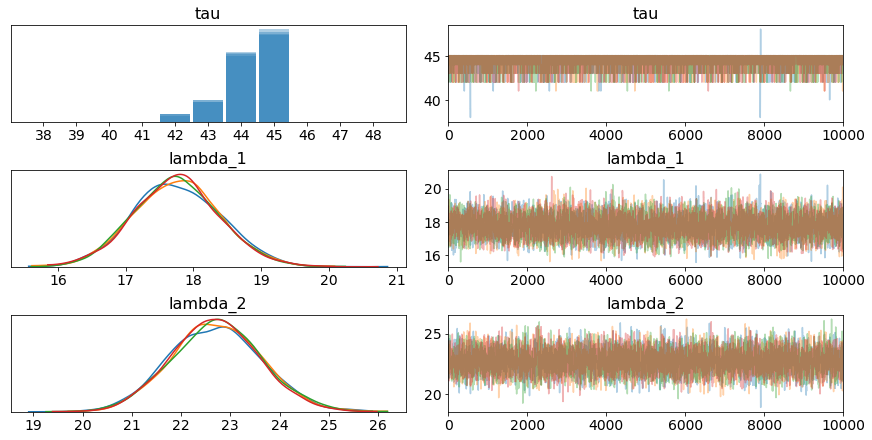
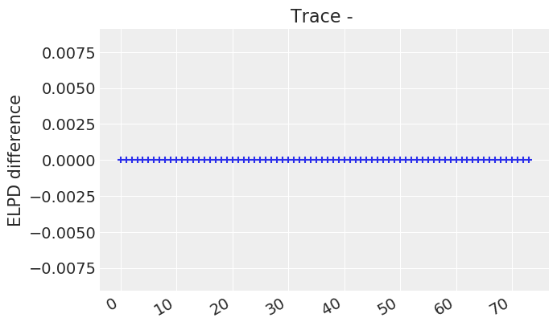
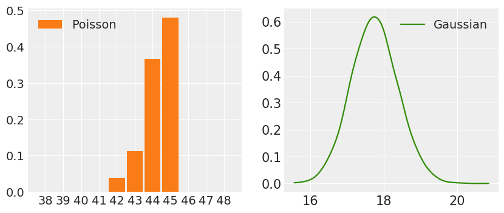
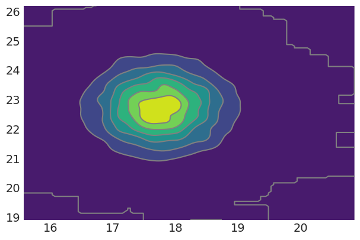
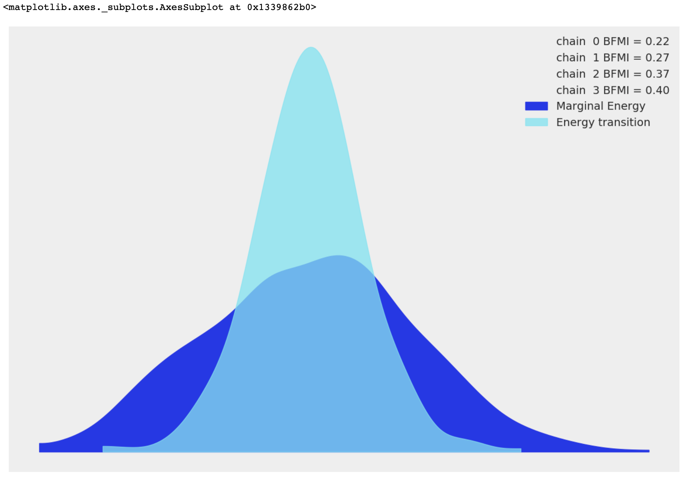
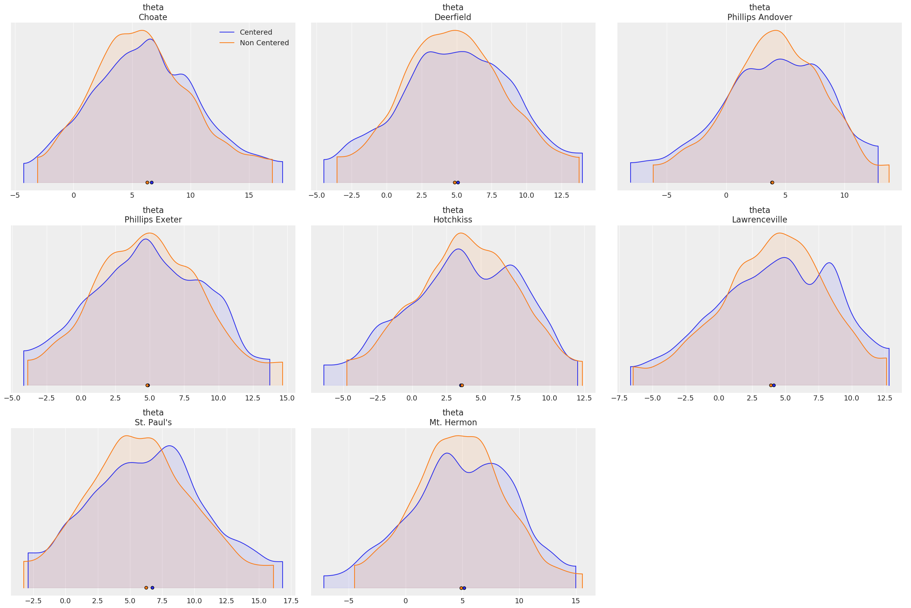
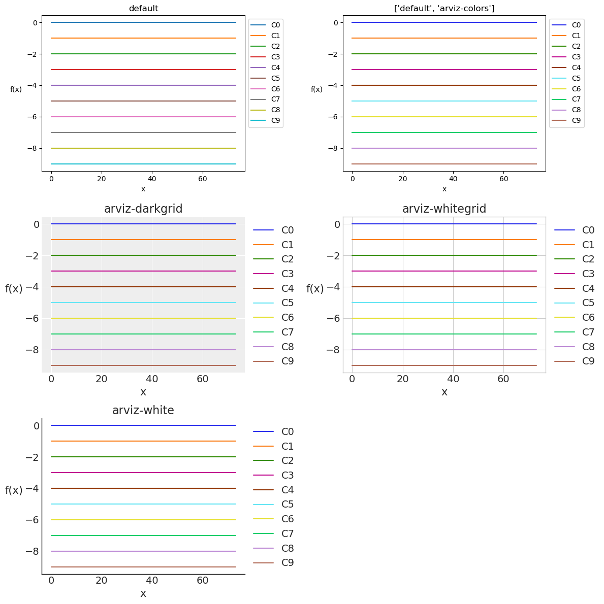

%matplotlib inline
from IPython.core.pylabtools import figsize
import numpy as np
from matplotlib import pyplot as plt
figsize(11, 9)
import scipy.stats as stats
import arviz as az
/Users/mousa/anaconda3/lib/python3.7/site-packages/dask/config.py:168: YAMLLoadWarning: calling yaml.load() without Loader=... is deprecated, as the default Loader is unsafe. Please read https://msg.pyyaml.org/load for full details.
data = yaml.load(f.read()) or {}
/Users/mousa/anaconda3/lib/python3.7/site-packages/distributed/config.py:20: YAMLLoadWarning: calling yaml.load() without Loader=... is deprecated, as the default Loader is unsafe. Please read https://msg.pyyaml.org/load for full details.
defaults = yaml.load(f)
count_data = np.loadtxt("txtdata.csv")
n_count_data = len(count_data)
import pymc3 as pm
import theano.tensor as tt
with pm.Model() as model:
alpha = 1.0/count_data.mean() # Recall count_data is the
# variable that holds our txt counts
lambda_1 = pm.Exponential("lambda_1", alpha)
lambda_2 = pm.Exponential("lambda_2", alpha)
tau = pm.DiscreteUniform("tau", lower=0, upper=n_count_data - 1)
with model:
idx = np.arange(n_count_data) # Index
lambda_ = pm.math.switch(tau > idx, lambda_1, lambda_2)
with model:
observation = pm.Poisson("obs", lambda_, observed=count_data)
with model:
step = pm.Metropolis()
trace = pm.sample(10000, tune=5000,step=step)
Multiprocess sampling (4 chains in 4 jobs)
CompoundStep
>Metropolis: [tau]
>Metropolis: [lambda_2]
>Metropolis: [lambda_1]
Sampling 4 chains: 100%|██████████| 60000/60000 [00:08<00:00, 7278.28draws/s]
The number of effective samples is smaller than 25% for some parameters.
trace
<MultiTrace: 4 chains, 10000 iterations, 5 variables>
lambda_1_samples = trace['lambda_1']
lambda_2_samples = trace['lambda_2']
tau_samples = trace['tau']
az.plot_autocorr(trace, var_names=['mu', 'tau']);

az.plot_posterior(trace);

az.plot_trace(trace);

az.style.use("arviz-darkgrid")
d1 = trace
d2 = trace
az.plot_elpd({"Trace": d1, "": d2}, xlabels=True)
<matplotlib.axes._subplots.AxesSubplot at 0x133f35a90>

import matplotlib.pyplot as plt
import numpy as np
import arviz as az
az.style.use("arviz-darkgrid")
a = tau_samples
b = lambda_1_samples
_, ax = plt.subplots(1, 2, figsize=(10, 4))
az.plot_dist(a, color="C1", label="Poisson", ax=ax[0])
az.plot_dist(b, color="C2", label="Gaussian", ax=ax[1])
<matplotlib.axes._subplots.AxesSubplot at 0x131f82a58>

az.style.use('arviz-darkgrid')
az.plot_kde(lambda_1_samples,lambda_2_samples)
<matplotlib.axes._subplots.AxesSubplot at 0x131b966d8>

az.style.use('arviz-darkgrid')
data = az.load_arviz_data('centered_eight')
az.plot_energy(data, figsize=(12, 8))
<matplotlib.axes._subplots.AxesSubplot at 0x131f412b0>

import arviz as az
az.style.use('arviz-darkgrid')
centered_data = az.load_arviz_data('centered_eight')
non_centered_data = az.load_arviz_data('non_centered_eight')
az.plot_density([centered_data, non_centered_data],
data_labels=['Centered', 'Non Centered'],
var_names=['theta'],
shade=0.1)
array([<matplotlib.axes._subplots.AxesSubplot object at 0x1304df160>,
<matplotlib.axes._subplots.AxesSubplot object at 0x12e055278>,
<matplotlib.axes._subplots.AxesSubplot object at 0x12f216c88>,
<matplotlib.axes._subplots.AxesSubplot object at 0x130e54278>,
<matplotlib.axes._subplots.AxesSubplot object at 0x12fc9d470>,
<matplotlib.axes._subplots.AxesSubplot object at 0x12f7f0470>,
<matplotlib.axes._subplots.AxesSubplot object at 0x12f2603c8>,
<matplotlib.axes._subplots.AxesSubplot object at 0x12faa2390>],
dtype=object)

figsize(12.5, 5)
N = tau_samples.shape[0]
expected_texts_per_day = np.zeros(n_count_data)
for day in range(0, n_count_data):
ix = day < tau_samples
expected_texts_per_day[day] = (lambda_1_samples[ix].sum()
+ lambda_2_samples[~ix].sum()) / N
x = range(n_count_data)
dist = stats.beta(2, 5).pdf(x)
style_list = ['default',
['default', 'arviz-colors'],
'arviz-darkgrid',
'arviz-whitegrid',
'arviz-white']
fig = plt.figure(figsize=(12, 12))
for idx, style in enumerate(style_list):
with az.style.context(style):
ax = fig.add_subplot(3,2, idx+1, label=idx)
for i in range(10):
ax.plot(x, dist - i, f'C{i}', label=f'C{i}')
ax.set_title(style)
ax.set_xlabel('x')
ax.set_ylabel('f(x)', rotation=0, labelpad=15)
ax.legend(bbox_to_anchor=(1, 1))
plt.tight_layout()
